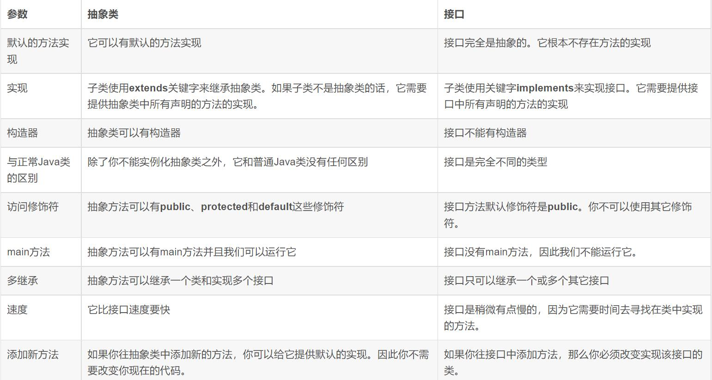

抽象类与接口
抽象类与抽象方法
- 用abstract修饰的类称为抽象类；
- 包含抽象方法的类叫做抽象类，但抽象类也可以不包含抽象方法；
- 不能为抽象类创建对象；
- abstract修饰的方法为抽象方法，此方法不能有方法体；
- 抽象类 天生就是被继承的, and 抽象方法 天生就是被重写的;
- 一个继承抽象类的类，必须重写基类中所有的抽象方法，否则就要将自己定义为抽象类。
- 抽象类中可以有构造方法，因为抽象类中有属性，抽象类与普通类的区别只是有抽象方法，所以这些属性是要被初始化的，抽象类中的构造方法就是用来初始化的。
抽象类使用原则
1、抽象方法必须为public或者protected(因为如果是private，那么该类不能被子类继承，其中的抽象方法也就不能被重写)。默认为public。
2、抽象类不能被实例话，可以采用向上转型的方法处理。注意：一定要在方法内部实例化
3、抽象类必须有子类，用extends继承，一个子类只能继承一个抽象类。
4、子类如果不是抽象类的话必须重写抽象类中的全部方法。（如果子类是抽象类重写父类的方法，被重写的父类中的抽象方法在子类中相当于普通方法）
Static修饰原则：外部抽象类不允许使用static声明，而内部的抽象类运行使用static声明。使用static声明的内部抽象类相当于一个外部抽象类，继承的时候使用“外部类.内部类”的形式表示类名称。内部类实例话的时候也是 AbstractDemo.inner。
接口
接口被用来建立类与类之间的协议；
可以理解接口为一种特殊的抽象类——完全抽象的类；
接口中的方法默认为抽象方法，显然不提供任何实现，即不能含有body，每个方法只是一个声明，并且自动声明为public；
但在jdk1.8中，使用default 修饰的方法可以拥有方法体，不需要被子类实现，被称为默认方法，这有点像抽象类了，这样的设计是为了为了以后扩展接口功能而不影响其他子类，JDK8中接口的静态方法只能通过接口名直接去调用，接口中的默认方法因为不是abstract的，所以可重写，也可以不重写。；而且允许接口拥有main方法
接口中可以含有域，即定义变量，但变量隐式的是static和final的；
实现接口的类要实现接口的所有方法。
接口不能创建对象，调用静态方法不需要对象
接口支持多继承，即一个接口可以extends多个接口，间接的解决了Java中类的单继承问题；
一个类可以实现多个接口；
静态方法（static method）：JDK 1.8中允许使用static关键字修饰一个方法，并提供实现，称为接口静态方法。接口静态方法只能通过接口调用（接口名.静态方法名）。
(1)如果多个接口定义了同样的静态方法，
即使存在实现类，同时实现多个接口，仍然是不可使用实现类名调用接口的方法
如果多个接口定义了同样的默认方法
实现类实现多个接口时，必须重写掉默认方法，否则编译失败。
在接口中可以定义实现的方法体是java8的一大特性，可以定义多个静态或者默认的方法，静态必须加上static，默认方法必须加上default关键字。
接口的继承
一个接口能继承另外一个或者多个接口,这和类之间的继承比较相似,接口的继承使用extends关键字,子接口继承父接口的方法.如果父接口中的默认方法有重名的,那么子接口需要重写一次
抽象类和接口的应用场景
1、如果你拥有一些方法并且想让它们中的一些有默认实现，那么使用抽象类吧。
2、如果你想实现多重继承，那么你必须使用接口。由于Java不支持多继承，子类不能够继承多个类，但可以实现多个接口。因此你就可以使用接口来解决它。
3、如果基本功能在不断改变，那么就需要使用抽象类。如果不断改变基本功能并且使用接口，那么就需要改变所有实现了该接口的类。
抽象类与接口的相同点
1、都不能被实例化
2、接口的实现类或抽象类的子类都只有实现了接口或抽象类中的方法后才能实例化。
抽象类与接口的不同点

a. 抽象类是对一种事务的抽象，是对整个类进行抽象，包括属性，行为（方法）。接口是对行为（行为）的抽象。如果一个类继承或实现了某个抽象类，那么一定是抽象类的种类（拥有同一种属性或行为的类）。举个简单的例子，飞机和鸟是不同类的事物，但是它们都有一个共性，就是都会飞。那么在设计的时候，可以将飞机设计为一个类Airplane，将鸟设计为一个类Bird，但是不能将 飞行 这个特性也设计为类，因此它只是一个行为特性，并不是对一类事物的抽象描述。此时可以将 飞行 设计为一个接口Fly，包含方法fly( )，然后Airplane和Bird分别根据自己的需要实现Fly这个接口。然后至于有不同种类的飞机，比如战斗机、民用飞机等直接继承Airplane即可，对于鸟也是类似的，不同种类的鸟直接继承Bird类即可。从这里可以看出，继承是一个 “是不是”的关系，而 接口 实现则是 “有没有”的关系。如果一个类继承了某个抽象类，则子类必定是抽象类的种类，而接口实现则是有没有、具备不具备的关系，比如鸟是否能飞（或者是否具备飞行这个特点），能飞行则可以实现这个接口，不能飞行就不实现这个接口。
b. 设计层面不同，抽象类作为很多子类的父类，是一种模板设计，而接口是一种规范，它是一种辐射式设计，也就是说对于抽象类，如果需要添加新的方法，可以直接在抽象方法中添加实现，子类可以不用变更，而对于接口不行，如果接口进行了变更，那么实现它的类都需要做变更。举例说明什么是模板式设计？最简单例子，大家都用过ppt里面的模板，如果用模板A设计了ppt B和ppt C，ppt B和ppt C公共的部分就是模板A了，如果它们的公共部分需要改动，则只需要改动模板A就可以了，不需要重新对ppt B和ppt C进行改动。而辐射式设计，比如某个电梯都装了某种报警器，一旦要更新报警器，就必须全部更新。也就是说对于抽象类，如果需要添加新的方法，可以直接在抽象类中添加具体的实现，子类可以不进行变更；而对于接口则不行，如果接口进行了变更，则所有实现这个接口的类都必须进行相应的改动。
接口中常量的public static final
public: 使接口的实现类可以使用该常量；
static：接口不涉及和任何具体实例相关的细节，因此接口没有构造方法，不能被实例化，没有实例变量，只有静态变量。（static修饰就表示它属于类的，随的类的加载而存在的，当JVM把字节码加载进JVM的时候，static修饰的成员已经在内存中存在了。如果是非static的话，就表示属于对象的，只有建立对象时才有它，而接口是不能建立对象的，所以接口的常量必须定义为static。）
final：接口中不可以定义变量，即定义的变量前都要加上final修饰，使之成为常量，且必须赋初始值！（final修饰就是保证接口定义的常量不能被实现类去修改，如果没有final的话，由子类随意去修改的话，接口建立这个常量就没有意义了。
接口中方法的修饰符：public abstract（默认不写）
接口结合工厂模式
通过工厂方式，代码将完全与接口的实现分离，这样就可以透明的将某个接口的一个实现替换为另一种实现。
1 | // 接口 |